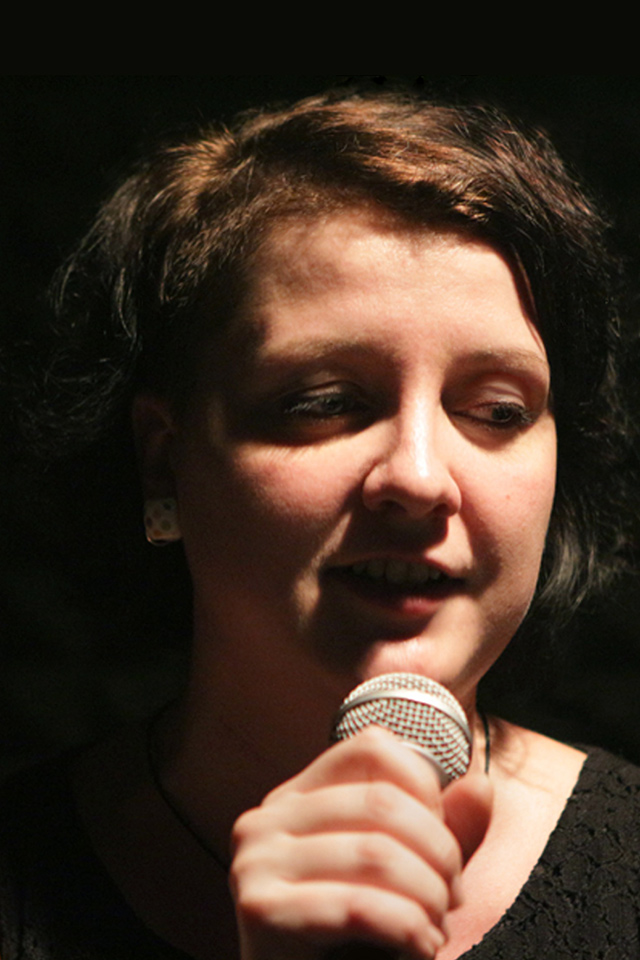
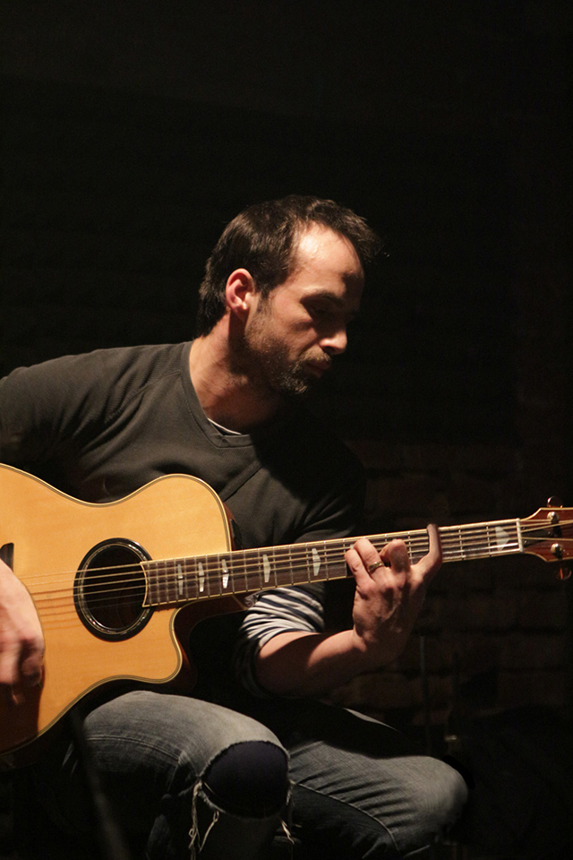
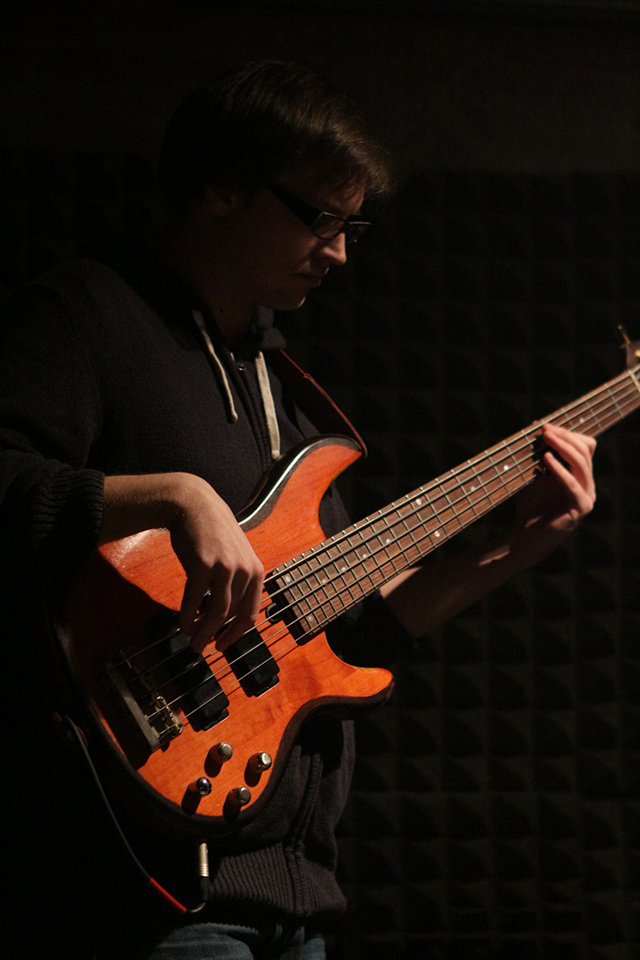
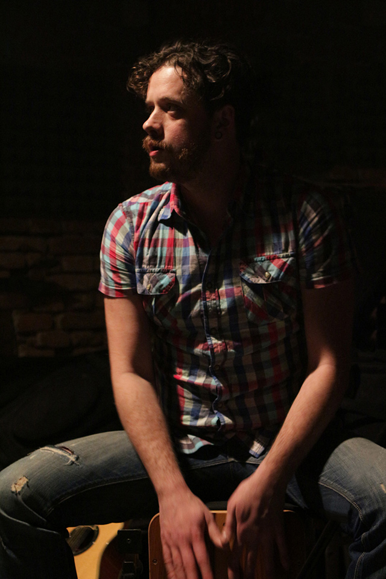

{kind=link}
Dlouholetá přátelství jednotlivých členů kapely přerostla po čase v souznění v hudbě. Myšlenka založit společně kapelu vznikla v roce 2012 v hospodě u Havrana… Terka: „Míro, hele, nezaložíme si kapelu?“… Míra: „Tak jo…“
Terka skvěle zpívala a divadelně improvizovala, Míra od šestnácti nedal kytaru z ruky. Za tu dobu hrál v mnoha kapelách a doprovázel improvizátory při vystoupeních…
Při hledání baskytaristy byl Mates jasnou volbou… S Mírou spolu hráli už v kapele Space Formers…
Postupně vznikaly písně, k nimž Terka psala texty, Míra hudbu a společně s Matesem hledali jejich výraz a směr. Do této sestavy přibyl ještě David, aby její zvuk doplnil o perkuse.
Souznění se proměnilo ve tvůrčí chvění… Čtyři lidé, čtyři názory, jedna hudba, která je nerozlučně spojuje. Upřímnou poezií textů provází energická kytara. Hranice cesty sebejistě nastavuje basová linka a hravé rytmy perkusí dotváří celkový pocit nikdy nekončícího hledání… Prostě Kamašne…
- Terka Odúterka - zpěv
- Jaromír Jíra - kytara
- Martin Prokeš - baskytara
- David Deutscha - perkuse
{kind=link}
{kind=link}
{kind=link}
{kind=link}
foto © Luboš Novotný